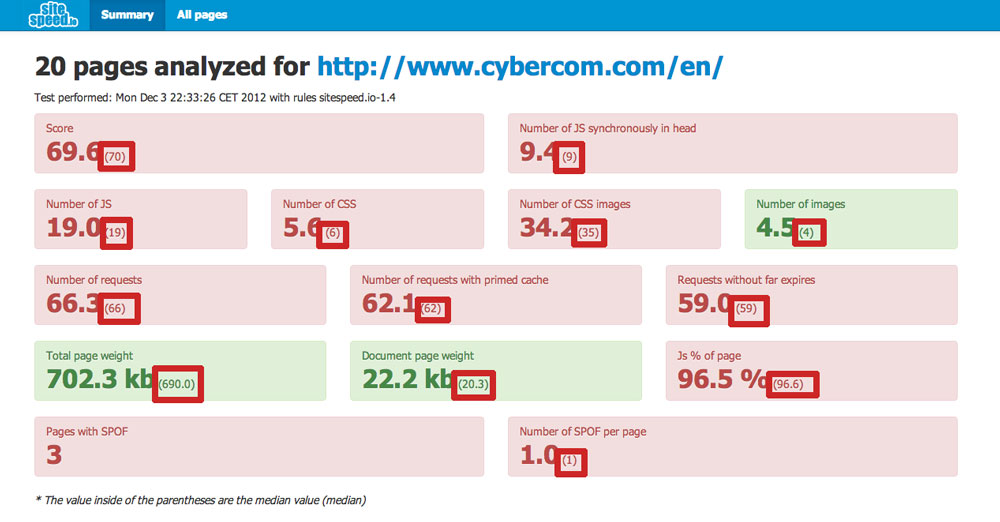
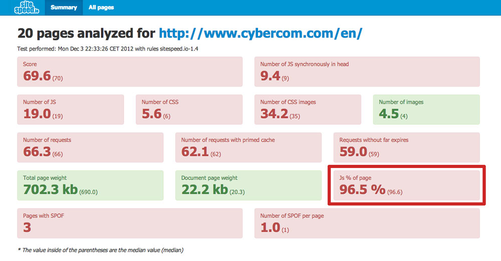
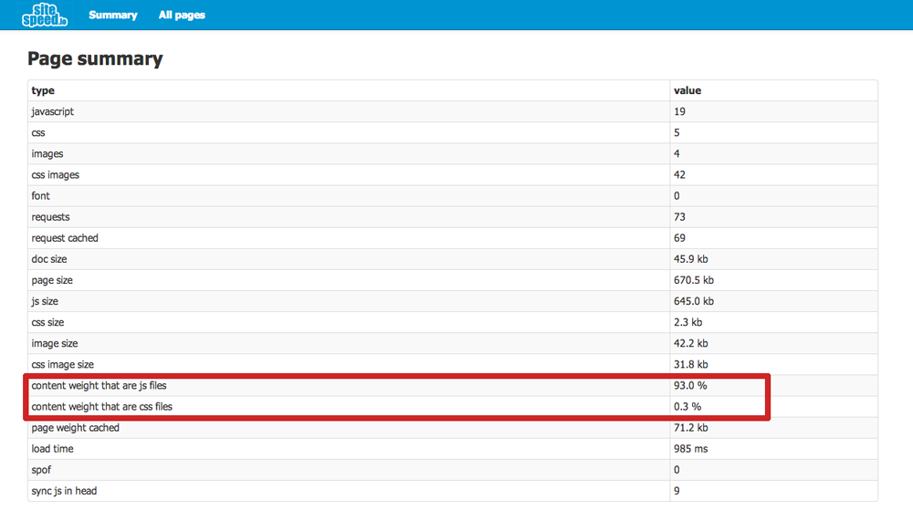
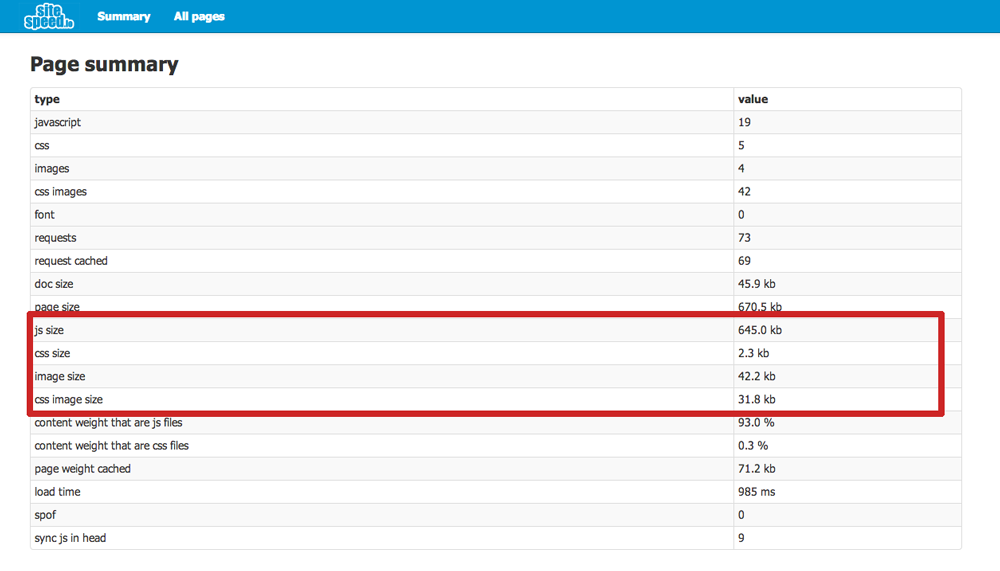

Sitespeed 1.4 was relased the 5th of December 2012. The main goal with the release was to add median values for all statistics on the summary page (before only average values was displayed). This is what's done in this release:
-

Median values
Median values are now shown for all statistics on the summary page (shows both average & median).
-

Too much javascript?
The amount of javascript on each page are calculated and compared with the amount of textual content, to make it visible how much javascript that is used.
-

Too much js & css?
The size of javasscript and css on each individual page are compared to the textual content, in order to get a feel of how much js & css you use.
-

Total weight on page
Added image, css, js and css image total weight in kb on the indivdual page summary.
And these minor ones:
- Changed the limit value for doc size on the summary page, was 10 kb but gzip is not taken inconcideration, changed to 100 kb!
- Concatenating css & js files in the results to one file each.
- Made Java heap size & result directory configurable from the sitespeed script. Read more here and here.
- Cleanup of the sitespeed.io script, removed unused code and made a structure easier to maintain.
- You can now zip the output result files by passing a parameter to the script. Read exactly how you do it here.
- Upgraded to latest crawler & xml-velocity jar.
- Upgraded jQuery from 1.8.2 to 1.8.3
Also the documentation has been reworked.
See the changelog for changes done in the past.
{kind=link}
{kind=link}
{kind=link}
{kind=link}